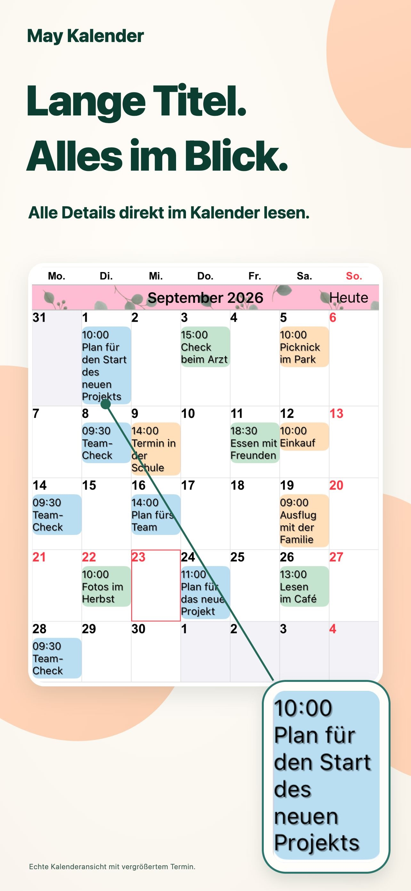
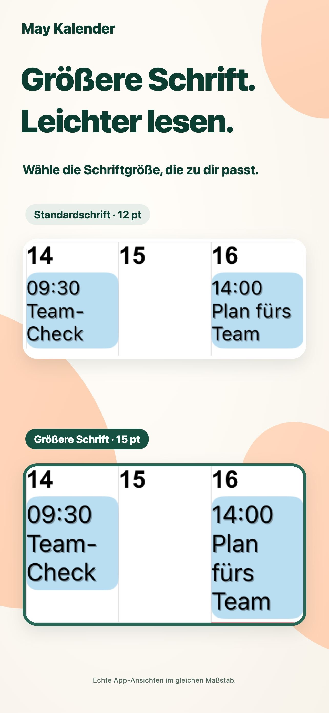
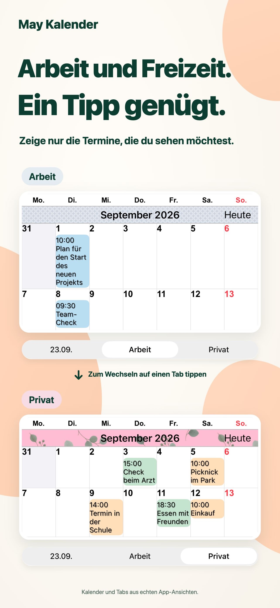
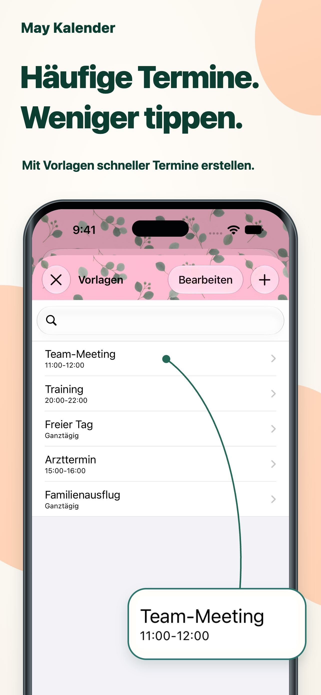

Ein Look, der dir gefällt.
Kombiniere Themenfarben, Terminhintergründe und Muster zu deinem persönlichen Kalender.
Jeden Tag klarer sehen.
Lange Termintitel direkt in der Monatsansicht. Schrift und Farben nach deinem Geschmack. So behältst du deine Termine im Blick.
Für iPhone und iPadIm App Store ansehenKostenloser Download · In-App-Käufe

Ein bisschen mehr Leichtigkeit beim Planen.
Beruf und Alltag. Deine Tage an einem Ort.FÜR DEINEN ALLTAG
Passe deinen Kalender an deine Planung an.
Lange Termintitel werden über mehrere Zeilen angezeigt. Passe Schriftart und Größe an und lies die Details, ohne den Monat aus dem Blick zu verlieren.

Speichere Kalenderkombinationen und wechsle mit einem Tippen zwischen beruflichen und privaten Terminen.

Speichere Besprechungen, Sport und Arzttermine als Vorlagen. Tippe doppelt auf ein Datum und wähle eine Vorlage, um einen Termin hinzuzufügen.

KLEINE DETAILS. GROSSER UNTERSCHIED.
Kombiniere Themenfarben, Terminhintergründe und Muster zu deinem persönlichen Kalender.
Wähle aus 20 Widget-Typen, darunter exklusive Widgets für das iPad.
Zeige nur Termine an, die deinem eingegebenen Text entsprechen.
FRAGEN UND ANTWORTEN
Der Download ist kostenlos. Die App bietet In-App-Käufe. Aktuelle Preise und Kaufoptionen findest du im App Store. Im App Store ansehen
Ja, auf iPhone und iPad. Einige Widgets gibt es nur für das iPad. Aktuelle Systemanforderungen findest du im App Store.
Erinnerungen, Feiertage, Wochennummern und Mondkalenderdaten werden unterstützt. Wochenbeginn und Zeitzone lassen sich einstellen.
Benachrichtigungen kommen von Apples Kalender-App. Hinweise können vor Beginn oder vor Ende eines Termins eingestellt werden.
FÜR KLARERE TAGE.
Entdecke einen Kalender, der zu dir passt.